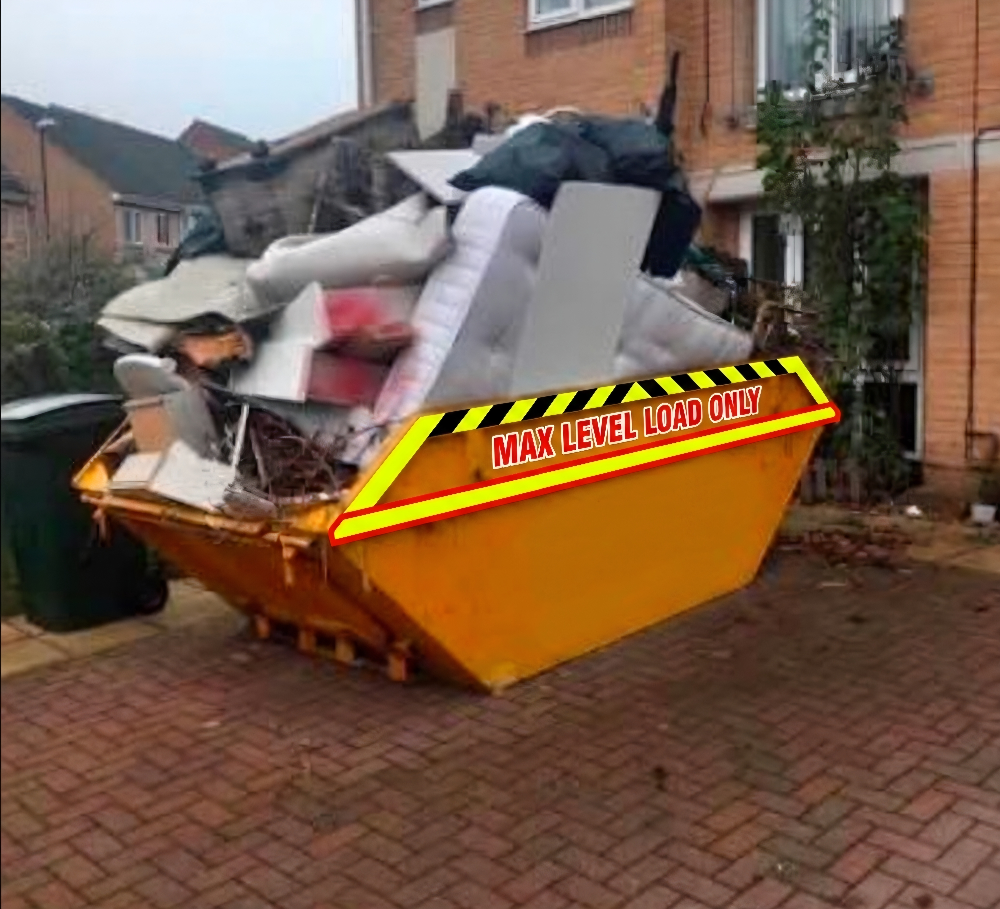
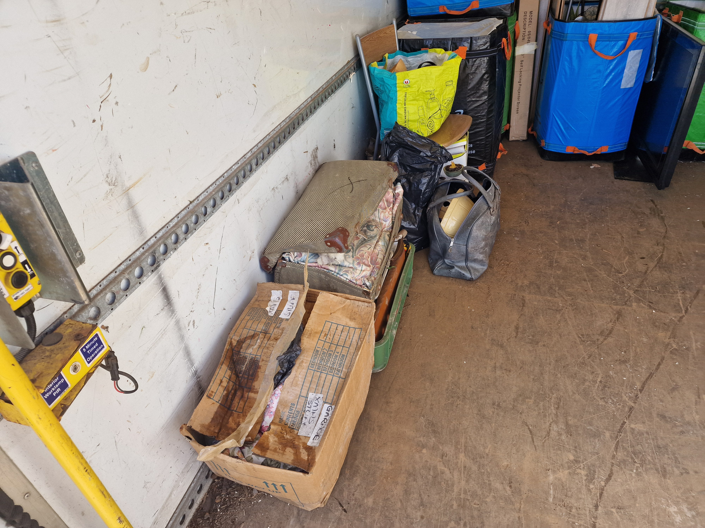
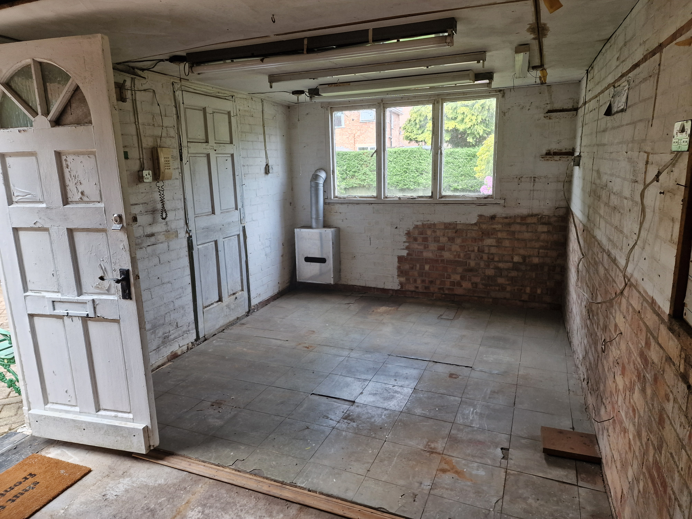

If you’ve got unwanted rubbish, old furniture, or a property to clear, one of the biggest questions people ask is: “Is house clearance cheaper than hiring a skip?”
The answer depends on the type of waste, the amount, and how much work is involved — but in many cases, professional house clearance in Nottingham can actually work out cheaper, faster, and far less stressful than skip hire.
At first glance, skip hire in Nottingham can look like the cheaper option. You simply order a skip, fill it yourself, and wait for collection. However, many homeowners completely underestimate the extra complications and hidden costs that come with it:

A professional house clearance is often the smarter, more cost-effective option when you want a completely hands-off service. It is highly recommended when:
Many homeowners comparing skip hire in Nottingham to professional property clearance services are surprised once permit fees, bulky waste charges, and labour are factored in.
At Donnelly’s Recycling, we provide reliable waste clearance services and professional property clearances across Nottingham, Mansfield, Sheffield, Derby, Newark, and surrounding areas. We take care of all the loading for you, clear the waste responsibly, and prioritize recycling wherever possible.

For small, straightforward DIY jobs like shifting old garden soil or bricks, a skip can sometimes be cheaper. But for full house clearances, dealing with probate properties, managing landlord tenant turnarounds, or clearing out packed garages, a dedicated team is far better overall value.
Once you multiply the costs of skip hire, road permits, fuel, your own personal time, and the potential surcharges for mattresses or electronic items, a fixed-price clearance quote from a reputable company like Donnelly’s Recycling is often the cheaper financial move.

If you're tackling structural renovations and have heavy rubble that you are happy to load yourself over a few days, hire a skip. But if you want a fast turnaround, zero heavy lifting, a same-day response, and a completely cleared out room or house, then a professional house clearance is the easier and more economical choice.
Send photos of the items you need clearing via WhatsApp for a fast, free price.
Get Your Free QuoteAt Donnelly’s Recycling, we help homeowners, landlords, tenants, estate agents, and businesses clear properties quickly, legally, and responsibly. Whether you need a single bulky item removed or a full property clearance, we provide fast quotes, reliable service, and environmentally responsible waste disposal throughout Nottingham and surrounding areas.
Our services include:
For many homeowners, yes. Once labour, permits, bulky waste charges, and disposal costs are considered, house clearance can often provide better overall value.
Most household waste, furniture, appliances, loft contents, garage waste, and general rubbish can be removed safely and legally.
No. With professional house clearance, all lifting and loading is handled for you.
Yes. Donnelly’s Recycling regularly provides same-day and next-day house clearance services across Nottingham and surrounding areas.